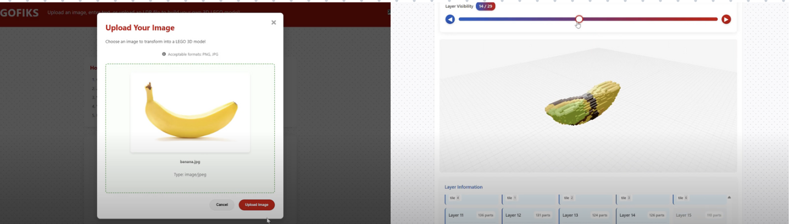
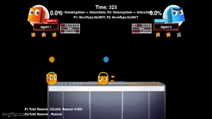
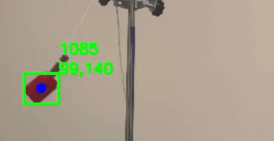

LegoFIKS
In the GenAI Genesis 2025 Hackathon, I worked on a project called LegoFIKS. The project is a web application that generates a 3D LEGO model and role-playing instructions from an image using Shape-E, Gemini, and more.
This is designed for children with Autism Spectrum Disorder to help them interact and have fun with others—because who doesn't love LEGO? Proudly, we have won the Best AI for Creativity & Generative Arts award at the hackathon.
Read More
LSTM Encoder-Decoder with TensorFlow
I have been leading a paper reading group with UTMIST on deep learning. We've been reading papers on the latest advancements and discussing their implications. Check out my blog post for a demo of one of the papers we explored.
Read More
Roommate Matching with AWS
I worked on a project that uses AWS to match roommates based on their written descriptions. This project won the AWS Hacks hackathon. Check it out!
Read More

Evolving Agents with NEAT
I've been exploring neuroevolution and its applications. Check out my projects on NeuroEvolution of Augmenting Topologies (NEAT) and how it's used to evolve intelligent agents.
Read More

Pendulum Motion Analysis
I worked on a project using computer vision to track a pendulum for my PHY180 project. Check out my analysis of pendulum motion.
Read More